Keven 创始成员
2014–2018 · 出现 69 次 · 69 篇 · 从警卫官起步的创始元老，连做CC1–CC10、屡任主持点评与VPE小编，是俱乐部最熟悉的「凯文大帝」。
警卫官Sergeant at Arms 创始人 即兴演讲者 游戏参与者 Toastmaster 选手 评论官 即兴演讲/演讲者
他从警卫官和点评官做起，半年里一口气讲下《What is Bitcoin?》《Stay Positive》《Good Night》等一连串备稿演讲，把舞台一步步走熟。后来他当上VPE兼小编，主持桌话、招新、组织活动，从台上的演讲者长成了台下托住整个俱乐部的人。从CC3到CC10，从新人到创始人，他用四年把这里当成了自己想看见的改变。
“ Toastmaster is a place to help you grow . Be the change you want to see the most!2014-04-10 → 2017-01-06 · 24 帧
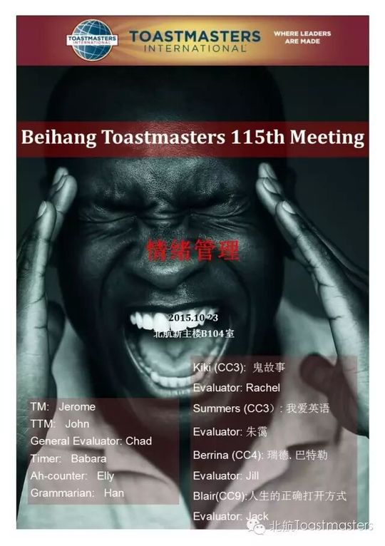
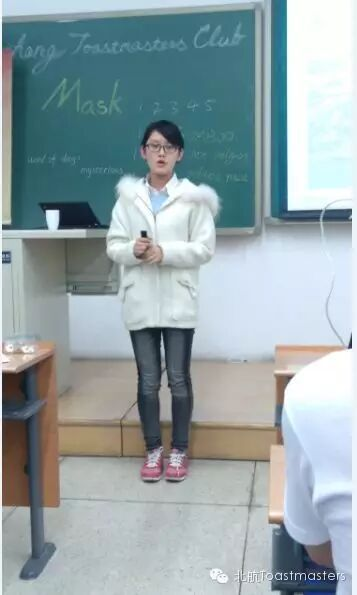
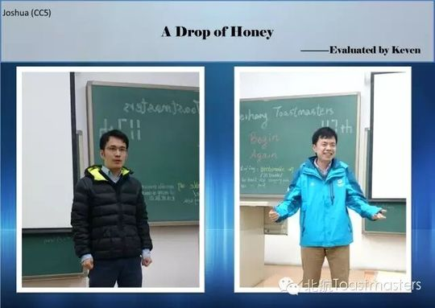
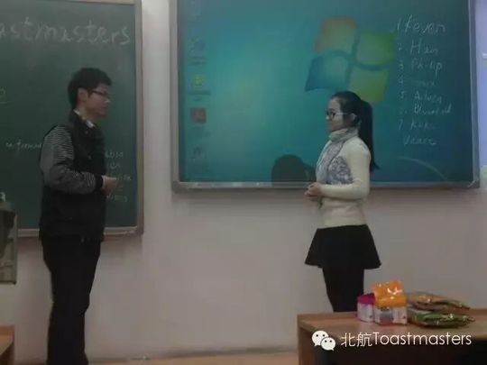
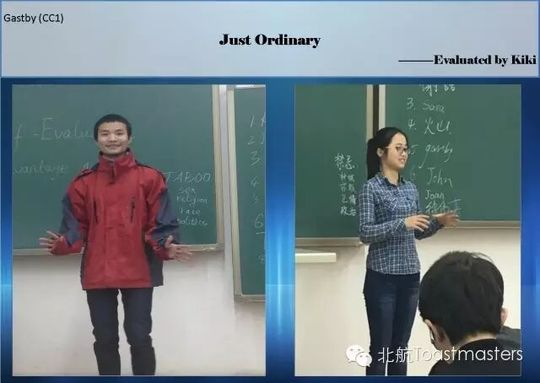
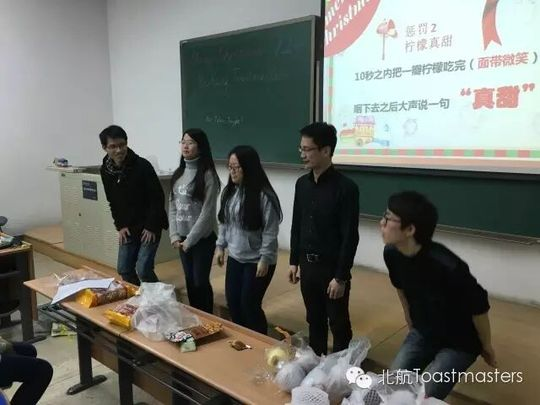
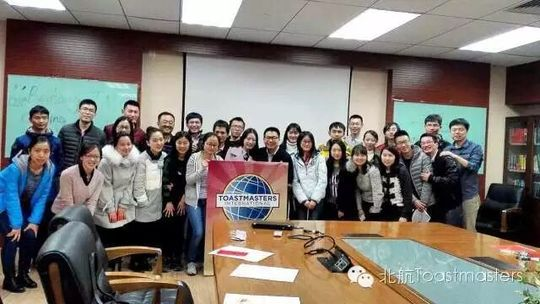
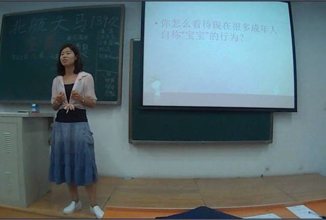
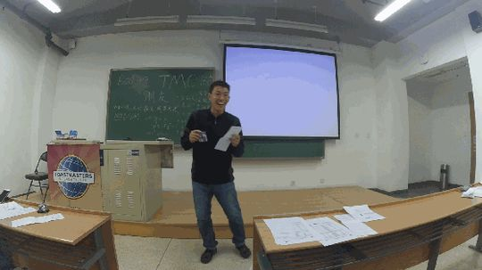
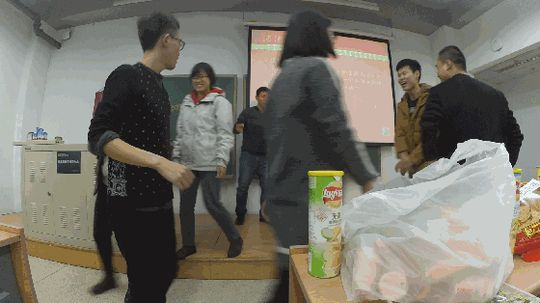
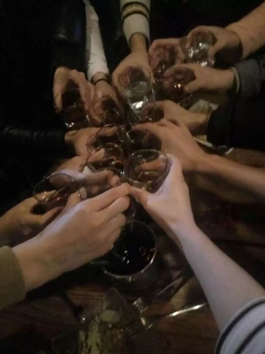
足迹时间线 · 14 个节点
Deron 会员
2014–2017 · 出现 49 次 · 49 篇 · 早期的「主持与点评」担当，反复出任Toastmaster、总点评官和桌话主持，也常做活动联系人。
游戏主持 Toastmaster Table Topics Master 选手 主持人 Table Topic Master 备稿演讲者 GE
他几乎包揽了俱乐部最吃功力的幕后角色：从总点评官到会议主持，从即兴主持到户外烧烤的联系人，一次次把会场稳稳托起。比起站在聚光灯下，他更愿意做那个让别人讲好的人，「Question matters」是他留给后来者的提醒。
“ "Question matters"2014-04-04 → 2017-01-06 · 24 帧
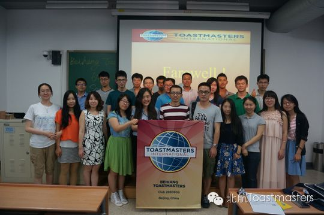
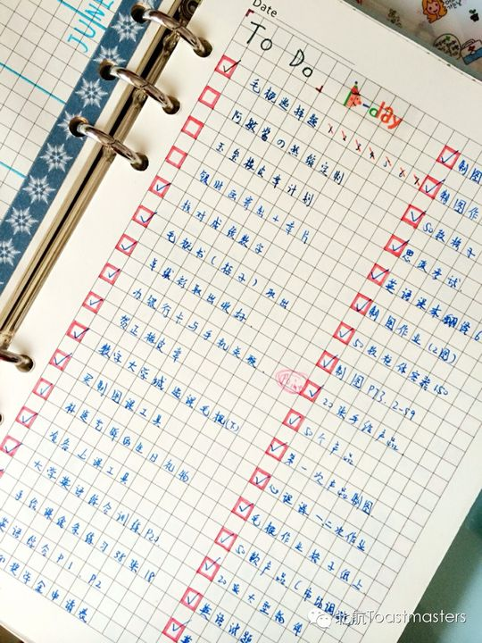
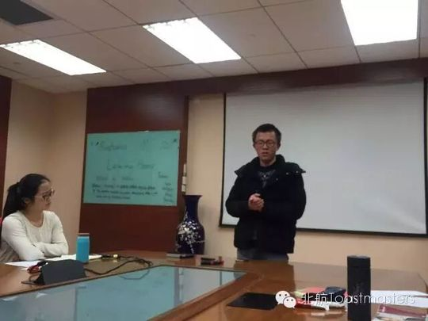
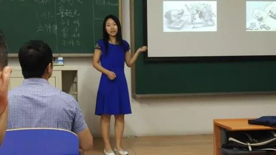
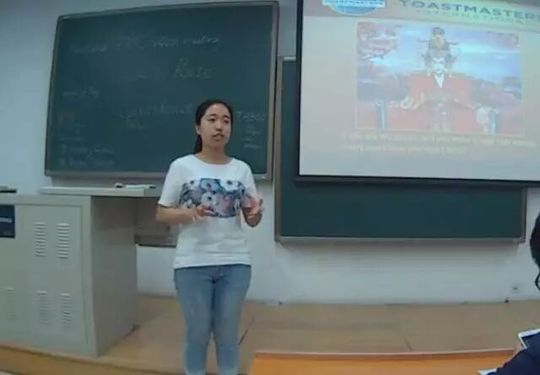
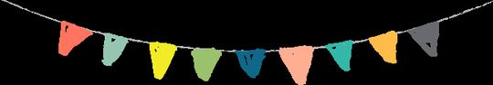
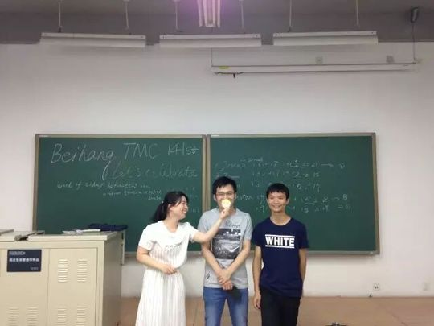
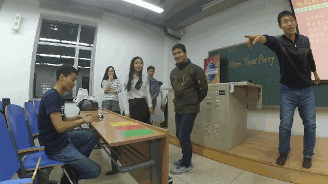
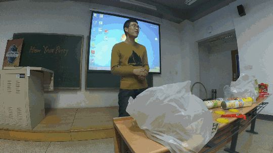
足迹时间线 · 14 个节点
Kiki 会员
2015–2017 · 出现 40 次 · 40 篇 · 从自我介绍的新会员讲到连获最佳演讲，再走上主席之位的成长样本。
即兴演讲者 备稿演讲者 游戏参与者/表演者 选手 主席 选手/点评员 Table Topics Master 卸任主席
她以一篇《K&K》破冰，从谈手机依赖的《I Have A Plan》到中文《鬼故事》，一路试探自己的边界。当她拿出最深藏的感情讲《泪点》、又以《I am not ready》连摘最佳演讲时，那个怕来不及的南方姑娘已经敢扛起枪上场。后来她成了俱乐部的主席，把当年别人给她的勇气又传了下去。
“ 有时候，我们就是要打无准备之战，就算知道，也要勇敢的扛起枪2015-09-11 → 2017-06-06 · 24 帧
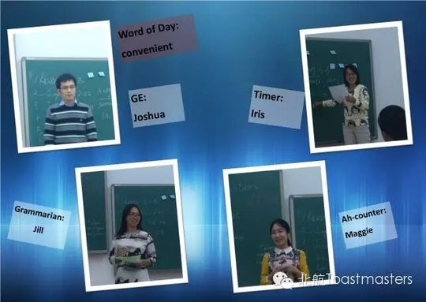
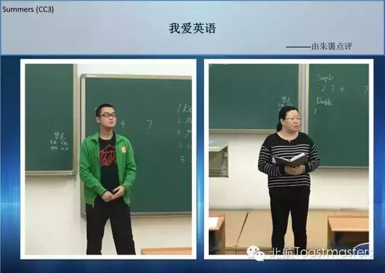
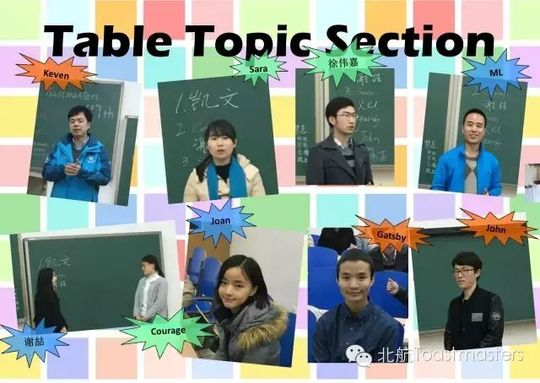
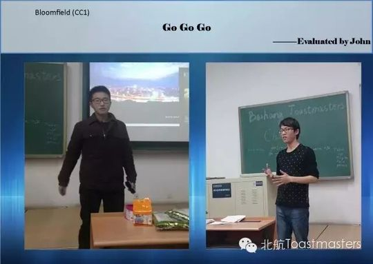
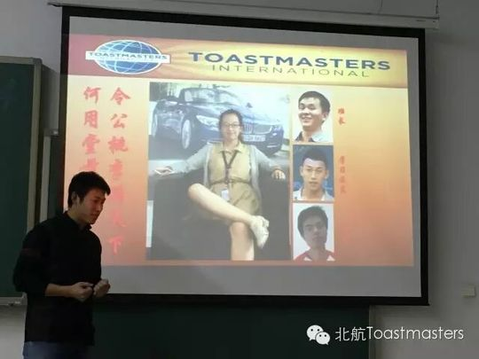
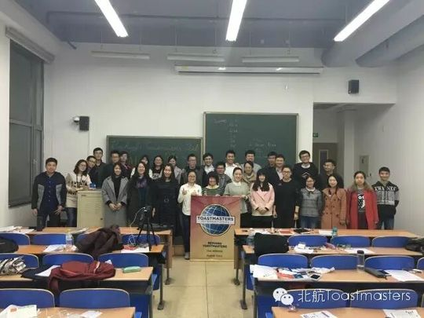
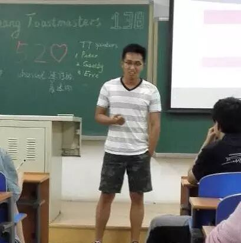
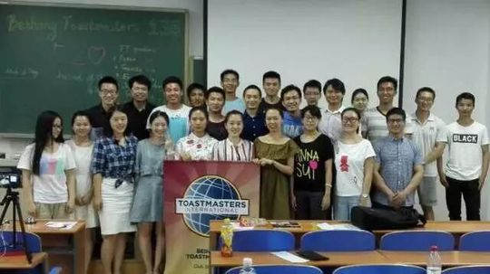
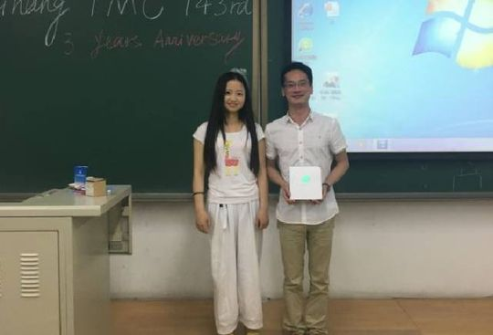
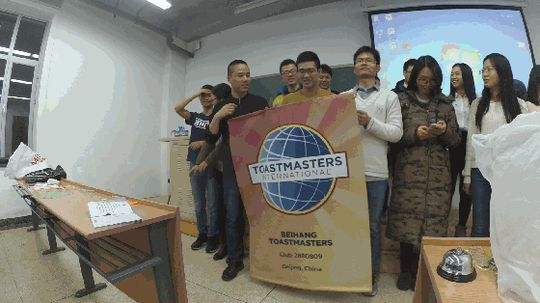
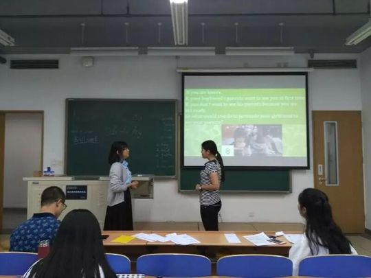
足迹时间线 · 14 个节点
Bowen 会员
2015–2017 · 出现 39 次 · 39 篇 · 从备稿演讲者一路做到主席的「俱乐部老人」，台上能讲、台下能主持也能招新。
即兴演讲者/备稿演讲者 备稿演讲者 CC9演讲者 前主席/俱乐部老人 Table Topics Master 选手 联系人 会员
他从《Virgo》《Wonderful Moments》一路讲到《My Grandpa》《Far Away from Home》，把离家与思念都搬上了台。同时他主持桌话、办游戏环节、当会议主席，也在招新文里留下自己的电话号码——既是会讲故事的演讲者，也是那个随时接电话的可靠联系人。
“ Any questions call Bowen:178010985882015-05-14 → 2017-06-06 · 24 帧
足迹时间线 · 14 个节点
Peter 会员
2014–2017 · 出现 37 次 · 34 篇 · 从计时员、语气词统计员做起的资深主持与点评常客，后来成为前会长。
语气词统计员Ah-counter 计时员Timer 即兴演讲主持人(TTM) Toastmaster 选手 会员 前主席 主持人
他从最基础的计时员和Ah-counter做起，很快成了会场上一次次出现的主持人和总点评官，连联合俱乐部的联合会议也由他主持。一篇《Never wait until it is too late》道出他的态度，后来他坐到会长的位置上——在他这里，没有小事，只有当真。
“ "Peter, it`s no big deal, I think." "No, big deal."2014-04-04 → 2016-12-22 · 24 帧
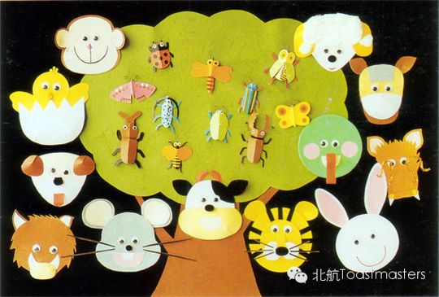
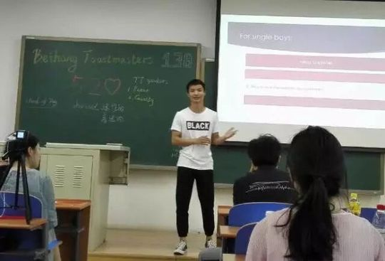
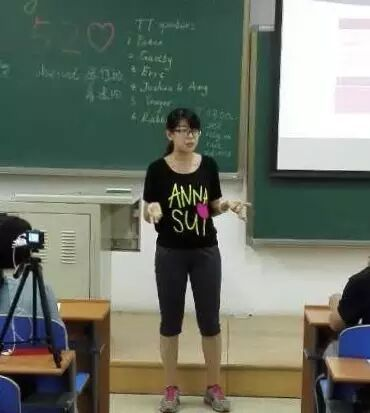
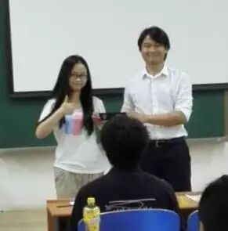
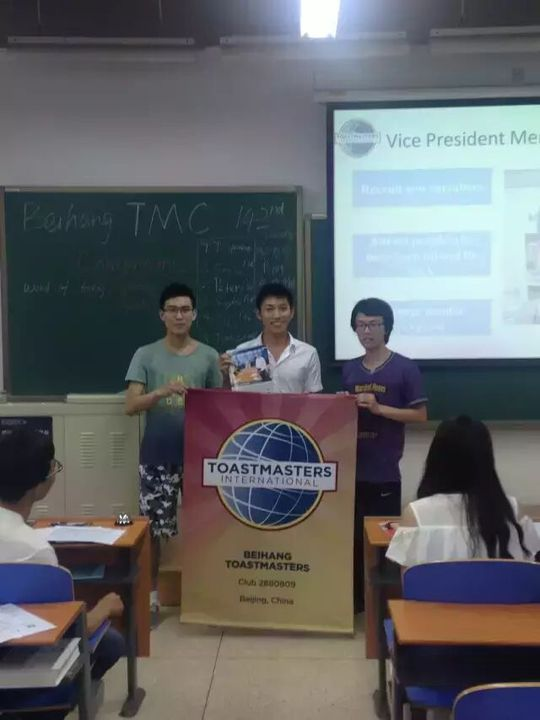
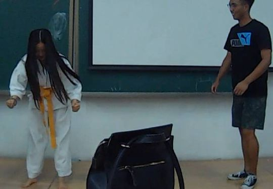
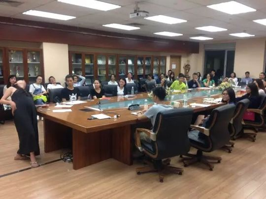
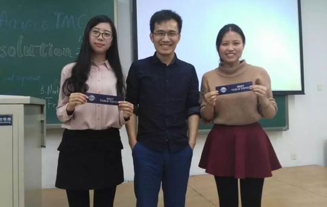
足迹时间线 · 14 个节点
John 会员
2014–2017 · 出现 34 次 · 34 篇 · 曾毕业告别又重新归来的会员，从CC1破冰一路讲到CC3，即兴台上格外活跃。
点评演讲嘉宾 备稿演讲者 会员 即兴演讲主持人(TTM) 即兴演讲选手 即兴演讲者 Toastmaster 选手
他曾在毕业时和大家告别，又在一年多后带着《The way I grow up》回到台上，破冰即夺最佳备稿演讲者。从《My Deskmate》到《Inside and Outside》，再到与人搭档演父子、演相亲的即兴戏，他越讲越放得开。他始终相信主动的人才不会被动错过，而他只想成为他自己。
“ I just want to become myself2014-06-19 → 2017-03-28 · 24 帧
足迹时间线 · 14 个节点
Joshua 会员
2014–2016 · 出现 30 次 · 29 篇 · 从台上变魔术的新人，一路走到主持桌话、做CC备稿、当评委，最终成为北航TMC主席。
选手(即兴演讲第一名) 选手 主席(President) 会长/主席 主席 Table Topics Master Toastmaster/主席 新主席
2014年底，他带着一场叫《Magic》的演讲第一次站上讲台；很快又把游戏、双十一、机器人这些话题信手拈来。从Table Topic Master到TM主持人，从CC2、CC3一路讲到《A Drop of Honey》，他在即兴比赛里拿过第一名，也常坐在评委席上看别人成长。最后他成了主席，心里装着那句『建设高质量的北航TMC』。
“ 建设高质量的北航TMC2014-11-21 → 2016-12-22 · 24 帧
足迹时间线 · 14 个节点
Gastby 会员
2015–2017 · 出现 30 次 · 29 篇 · 擅长即兴双人戏的『邻家大男孩』，从破冰CC1讲到主持整场会议，多次摘得最佳即兴演讲者。
即兴演讲主持人 即兴演讲者 即兴演讲主持 备稿演讲者 总主持人(Toastmaster) 表演者/送别者 选手 Toastmaster
他最让人记住的，是和Lily演分手、和Jim演面试、和Vance演父子对话——一上台就能把全场带进戏里，两度被评为最佳即兴演讲者。台下他从CC1《Just Ordinary》讲到CC3《My Emotional Doctor》，台上又两次担起整场会议的主持。坦荡又真诚，他敢在台上说出那句藏了多年的心里话。
“ 我喜欢你很多年了 只是因为害羞而没表白2015-10-26 → 2017-06-06 · 24 帧
足迹时间线 · 14 个节点
Joy 会员
2014–2018 · 出现 29 次 · 29 篇 · 从破冰《My Sandplay》出发，把心理学讲进演讲台，并多次担任桌话主持与比赛主持。
点评1 点评 即兴演讲评估人 即兴演讲者 时间官(Timer) 游戏参与者 选手 Table Topics Master
她以一场《My Sandplay》破冰，此后总把自己的心理学专业揉进演讲里——从《Cry with someone's company》到那场让人重新关注父母的《Special Homework》，再到CC5《The Open Mode of Psychology》。她做过Toastmaster、做过即兴主持，也撑起过英文比赛的Contest Chair。台前台后，她都是那个温柔而稳定的存在。
“ 她用心理学的视角，把演讲讲成了与人心的对话。
2014-12-11 → 2018-07-12 · 24 帧
足迹时间线 · 14 个节点
Sophie 干部
2014–2016 · 出现 29 次 · 28 篇 · 从入会仪式上的新人成长为现任主席，主持过无数场会议，也站上过比赛与告别的舞台。
选手 评委 即兴选手 点评员 主持人 主持人 Toastmaster/现任主席 现任主席 会长(president)/演讲者(CC5)
2014年盛夏，她在入会仪式上成为新会员之一；短短几周后就接过第66次会议的主持棒。从CC1《Enjoy the Life》、CC2《SLOW DOWN》一路讲下去，她做评估、主持桌话、登台比赛，几乎把俱乐部的每个角色都走了一遍。后来她成了主席，把这个台撑得稳稳的，也终于走到了告别的那一天。
“ 从入会的那个新人，到台前那位稳稳的主席。
2014-06-27 → 2016-06-20 · 24 帧
足迹时间线 · 14 个节点
Vance 会员
2015–2017 · 出现 26 次 · 25 篇 · 爱运动、敢表演的会员，从破冰一路讲到CC5，也在圣诞晚会用双截棍逗乐全场。
游戏参与者/被送别者 选手 会员 备稿演讲者 参与者 Table Topic Master 演讲者 Toastmaster
他的破冰演讲叫《Sports make life better》，那股劲儿后来也一直跟着他。从CC2的暑假、CC3《Be brave to do everything》，到预告里的海南骑行CC5，他一步步往前走；即兴台上他和Fan、Anna、Kiki搭过无数次戏。最难忘的是圣诞晚会那段双截棍，把全场都逗乐了。
“ Be brave to do everything——他真的就这么活着。
2015-06-19 → 2017-01-06 · 24 帧
足迹时间线 · 14 个节点
Jack 会员
2014–2019 · 出现 25 次 · 25 篇 · 陪伴俱乐部五年的老会员，从一次Timer起步，做到最佳备稿者并当选会员副主席。
图片 最佳备稿者 语法官 会员副主席当选 老会员/备稿演讲者 选手 选手 CC7 演讲者(CC5)
他的成长是从仅仅担任一次Timer开始的，却一待就是五年。从CC1《Emergency Tips》到CC3《Get Rid of Video Game Addiction》，再到《Jack & Rose》，他做过即兴主持、桌话主持，也主持过第90次的毕业会议。最后他拿过最佳备稿者，当选了会员副主席——一个把俱乐部当成长跑的人。
“ 从一次计时员起步，他把五年都留给了这个台。
2014-04-17 → 2019-03-17 · 24 帧
足迹时间线 · 14 个节点
Grace 会员
2014–2017 · 出现 25 次 · 25 篇 · 从破冰演讲到主持与即兴，陪伴俱乐部走过三年的老会员。
即兴演讲主持 即兴演讲者 备稿演讲者 老会员/即兴演讲者 嘉宾 Table Topics Master 选手 选手 CC2
2014年深秋，她以一场《Where Has I Gone》完成破冰首秀，也在年末晚会上唱起《那些花儿》。此后她接连完成健康、美食、微信等多个备稿演讲，并多次担任会议主持与即兴主持。直到2017年，她仍以老会员身份站在台上即兴发言，三年如一日地见证着这个舞台。
“ 从破冰的《Where Has I Gone》到《那些花儿》的歌声，她把成长唱进了头马的三年时光。
2014-11-07 → 2017-06-06 · 24 帧
足迹时间线 · 14 个节点
Amy 会员
2016–2017 · 出现 25 次 · 25 篇 · 从新人破冰一路成长为俱乐部主席的全能会员。
即兴演讲主持 主席 即兴演讲者 备稿演讲者 即兴演讲者/点评 主席(President) 新任主席(President) 选手
2016年春天，她以一句"Here is Amy, that's me!"完成破冰自我介绍，坦言自己物理很好却觉得书本难解决实际问题。此后她在多场即兴双人演讲中大放异彩，与Wesley组CP夺得第一，还拿下小区中文幽默比赛冠军和Best Prepared Speech。最终她成长为俱乐部新任主席，从台下的新人走到了带领大家的位置。
“ Here is Amy, that's me!2016-03-03 → 2017-06-24 · 24 帧
足迹时间线 · 14 个节点
Sarah 会员
2016–2017 · 出现 23 次 · 23 篇 · 稳步完成CC1到CC6、兼任主持与会议记录的勤勉演讲者。
英文演讲选手 备稿演讲者 即兴演讲者 选手 Toastmaster 小编/会议记录 参与者 演讲者
她从虚拟现实、情商谈起，一路把备稿演讲做到了CC6，用一场"梦中采访卡梅伦谈脱欧"展现了想象力，也写下"致被家伤过的人们"的温柔。她多次担任会议主持，认真撰写主题引言甚至留下自己的联系电话，还执笔会议纪要记录换届。从台前到幕后，她都在踏实地为这个舞台付出。
“ Any questions call Sarah:158012665262016-03-17 → 2017-05-14 · 24 帧
足迹时间线 · 14 个节点
Han 会员
2015–2016 · 出现 21 次 · 20 篇 · 被热情打动而加入，从破冰一路做到CC4的运动少年。
会员 选手 Table Topic Master 即兴演讲/评委 Toastmaster 即兴演讲/演讲者 演讲者 即兴选手
2015年秋，他以《Who am I》破冰登台，受访时坦言最吸引自己的是大家对每个人的热情。此后他稳步完成《Be a real one》《不着急》等备稿演讲，担任过即兴主持和TM主持，还参与了三句半节目的排练演出。最后一场《What sports have taught me》，让人看见运动教会他的那些道理。
“ 头马最吸引我的地方还是大家对每个人都非常非常热情2015-10-15 → 2016-07-04 · 24 帧
足迹时间线 · 14 个节点
Rocky 会员
2015–2017 · 出现 20 次 · 20 篇 · 从电竞主题首秀成长为总主持人的热心会员。
Toastmaster 选手 备稿演讲者 即兴演讲者 即兴演讲者/备稿演讲者 CC2演讲者 即兴演讲主持人(TTM) 总主持人(Toastmaster)
他的第一次演讲从体育与电玩讲起，把《电竞世界》带上了头马的舞台。此后他与Huan、Qiqi等搭档即兴对话，妙趣横生，还以两版《Happy Birthday to my school》向母校献上祝福。2017年，他多次担任会议总主持，甚至为TTM精心准备了七个即兴问题，从台前新人走成了掌控全场的人。
“ 从电竞主题的第一次演讲，到为全场准备七个即兴问题的总主持，他一步步站到了舞台中央。
2015-12-07 → 2017-06-24 · 24 帧
足迹时间线 · 14 个节点
Qiqi 会员
2016–2017 · 出现 20 次 · 19 篇 · 从新人破冰一路做到CC5、屡获最佳的坚持者。
点评演讲嘉宾 Toastmaster 备稿演讲者 点评员 演讲者 3号演讲者 即兴演讲者 CC5演讲者
她以《My Life Long Career》破冰，又用《我的爱情故事》拿下最佳备稿演讲，一路把演讲做到了CC5的《English, 7F and me》。她担任过会议主持和即兴主持，在你画我猜里观察力出众，更在即兴中说出"遇到问题先自我反省找解决方案"。一句"I'm 琪琪 not Qiqi, we are different"，是她对自我最俏皮也最坚定的认领。
“ I'm 琪琪 not Qiqi, we are different2016-03-24 → 2017-04-23 · 24 帧
足迹时间线 · 14 个节点
Chen 干部
2018–2019 · 出现 18 次 · 18 篇 · 从幕后图文小编一路做到当选公关副主席乃至主席，把一篇篇会议推送做成俱乐部的脸面，也在马拉松会议登台讲了一回。
会员副主席/图文 海报/编辑 分享者 编辑/文案 编辑/海报/文案 组织/拉人 图片 海报/文案/编辑
Chen是那种把名字藏在落款里的人——223次会议《Thanksgiving》预告、回顾、海报、文案，几乎每一篇推送背后都有他的反复打磨。2018年底他当选公关副主席，从执行者成长为这条线的负责人，后来更被大家唤作主席。最难得的是，做惯了幕后的他在2019年初的演讲马拉松上走到台前，带来一场幽默又满是干货的演讲，证明编辑的笔和讲者的口，他都拿得起。
“ 一字一句地把每场会议写成俱乐部的模样。
2018-12-04 → 2019-10-15 · 24 帧
足迹时间线 · 14 个节点
Kaisense 干部
2017–2019 · 出现 18 次 · 18 篇 · 从有奖问答官起步，一路走到教育副主席，用《A flower grows from a dead wood》讲出自己的成长，也把质量与教育扛在肩上。
备稿演讲者 主席 联系人 点评2/计数员 点评/计数员 即兴点评TTE 新人/选手 VPE教育副主席
Kaisense最早只是站在台侧的有奖问答官，后来鼓起勇气走上参赛台，凭英文名故事一路晋级获胜。他的破冰演讲《枯木生花》像是一种自我宣言，把成长经历讲给所有人听。担任教育副主席后，他从一个被点评的新人，变成了负责会议运行与质量、为别人引路的人。
“ 枯木亦能生花——把自己的成长讲成一束光。
2018-03-23 → 2019-03-10 · 24 帧
足迹时间线 · 14 个节点
Doris 会员
2014–2017 · 出现 18 次 · 18 篇 · 从游戏主持到新任会长登台喊出《Impossible Is Nothing!》，再到一篇篇CC备稿演讲，最后成为被后辈念念不忘的资深前辈。
资深会员/比赛主席(chair) 点评员 选手 老会员 选手 CC10/前主席 前主席 选手 CC9 演讲者(CC8)
Doris是俱乐部的一棵老树。2014年她以新任会长身份做了《Impossible Is Nothing!》，开启了那段被历史回顾里称作‘阴盛阳衰’的主席时代。此后她从CC4一路讲到CC10，从《We Are Women》到《Why TMC?》，几乎把成长手册写满。即便在告别环节挥手离场，她依然被新人Rita提起——是她当年带着Rita走进另一家Toastmaster，把火种递了下去。
“ Impossible Is Nothing——她用一任会长的时光把这句话过成了真。
2014-04-17 → 2017-03-17 · 24 帧
足迹时间线 · 14 个节点
Andy 会员
2015–2016 · 出现 17 次 · 17 篇 · 从犹豫彷徨的温州新人，靠《The Way I Went》迈出第一步，一路讲到CC6，还拿下小区中文幽默比赛季军。
备稿演讲者 CC6演讲者 选手 Speaker2 会员 中文演讲比赛主持 新人
Andy刚来时是个犹豫彷徨的新人，是小伙伴的鼓励让他跨出了第一步。他的破冰演讲《The Way I Went》从家乡温州讲起，之后《Couch Surfers》《To Be or Not to Be》一路讲到CC6，还在小区中文幽默比赛上夺得第三名，甚至主持起春季中文比赛。在三周年趴上告别时，那个曾经不敢开口的人，已经能从容地与Wendy搭档即兴。
“ 这里给我非常温暖的赶脚，在我犹豫彷徨的时候，小伙伴们给予的鼓励跟推力，让我跨出了第一步2015-10-14 → 2016-12-22 · 24 帧
足迹时间线 · 14 个节点
Jason 会员
2014–2023 · 出现 16 次 · 16 篇 · 从点评官、总点评官、会议主持一路扛起会场，毕业时获颁特别贡献奖，多年后又以兄弟俱乐部主席的身份回到200次盛典。
圆桌会议主持人/Mastermind 海报 信必优俱乐部现任主席 评委组组长 选手 毕业会员 General Evaluator Toastmaster
Jason早期几乎是会场的定盘星——点评官、总点评官、主持人，哪个角色缺人他都顶得上，还做了CC4《Action Speaks Louder than Words》。2014年毕业告别时，他获颁特别贡献奖，那是对一位实干者最朴素的褒奖。但他的故事没有停在告别：他后来成了信必优俱乐部的主席，2018年带着评委组回到200次盛典——离开的人，以另一种身份回了家。
“ I am poor, i dont have money2014-04-04 → 2018-06-13 · 24 帧
足迹时间线 · 14 个节点
Milton 会员
2016–2017 · 出现 15 次 · 15 篇 · 从介绍家乡的即兴新人，到CC2《Ferryman》、CC4《Restart》的备稿讲者，再到独当一面的即兴主持人，中英双语都敢上。
即兴演讲主持人TTM/选手 即兴演讲主持 备稿演讲者 即兴演讲主持人(TTM) 演讲者 1号演讲者 即兴演讲者 中文比赛选手
Milton初登场时，只是用一段即兴演讲介绍家乡美景。很快他从破冰走向备稿，《Ferryman》里讲摆渡人的经历，《Restart》里讲一个计算机博士生的重启。他不止讲，还撑起即兴主持的台子，抛出‘疲惫的根源’‘自律’这样的话题；中文台上他借范雎的故事讲善恶一念之差，哪怕讲到超时也舍不得收。
“ almost every one wants to be successful, how can we succeed? I think in order to achieve our goals, we must make a good life plan for ourselves.2016-10-26 → 2017-06-16 · 24 帧
足迹时间线 · 14 个节点
Fiona 会员
2014–2017 · 出现 15 次 · 15 篇 · 从零角色的新人到总主持人，三年里在即兴与备稿舞台上一路成长。
Toastmaster 即兴演讲者 CC2演讲者 即兴演讲选手 总主持人(Toastmaster) 新人/演讲者 哼哈官 TTM
2014年加入时，她的角色记录还是"0次"。两年后，她以新会员身份完成CC1首演《My story with food》，又做哼哈官、即兴主持TTM。2017年她已能担纲165次例会总主持人，并以CC2《Grown-up essence》分享自己的成长。从网购趣事到压岁钱情景，再到带高中同学上台对话，她把生活一点点讲成了台上的从容。
“ 从一个角色都没担任过的新人，到站上总主持人的位置——成长，原来就是这样一步步发生的。
2015-11-17 → 2017-06-06 · 24 帧
足迹时间线 · 14 个节点
Flair 会员
2016–2017 · 出现 15 次 · 15 篇 · 半年从青涩入会者成长为"现象级"语法官与TTM，并以演讲讲述从问题少年到自信的转变。
备稿演讲者 中文比赛选手 即兴演讲主持人(TTM) 游戏参与者 选手 语法官 新会员
2016年6月正式入会后，他在即兴台上越来越熟悉舞台，担任语法官那次被赞"现象级、进步显著"。第一次做即兴主持人时忘了讲清问题，全靠搭档帮他重复，他记住了那份感激。到2017年，他用CC2《How I choose friends》讲出自己从问题少年到自信的转变，一路把紧张讲成了底气。
“ It was so kind of her to repeat the question when i was missing at the stage even forgot to tell the audiences the details to the question, i was so grateful to her2016-06-20 → 2017-05-14 · 24 帧
足迹时间线 · 14 个节点
Jill 会员
2015–2017 · 出现 15 次 · 15 篇 · 两年里从破冰新人稳步走到CC7，是俱乐部里踏实积累的备稿主力。
游戏参与者 选手 主持人 主持人(TM) 即兴主持(TTM) 计时员(timer) 选手 CC5 演讲者(CC4)
2015年初她以破冰演讲《Accept who you are》起步，此后几乎一路不停：从Vegetarian、Economic Bubble到Poverty，备稿编号一级级往上走，直到CC7。她也做计时员、Table Topic Master、Toastmaster主持，还和Nancy演过甄嬛传情景。她用最朴素的方式证明：接纳自己，然后一篇篇讲下去。
“ 接纳真实的自己，然后一篇接一篇地讲下去——这就是她两年走过CC7的全部秘诀。
2015-01-09 → 2017-01-06 · 24 帧
足迹时间线 · 14 个节点
Jane 会员
2014–2016 · 出现 15 次 · 15 篇 · 从破冰新人到比赛选手与点评员，是台上能讲、台下被唤作"队医"的暖心成员。
选手 即兴选手 点评员 选手(中文组)/队医 即兴主持 Table Topic Master 演讲者(CC3) Table Topic Master 演讲者(CC2)
2014年她以破冰演讲《Just Talk About Me》登台，很快就开始主持会议、做Table Topic Master。她讲过《Grandpa Ye》这样动情的备稿，也做点评员，温和地提醒别人"不要常作捶胸状"。2015年秋季比赛中文组，大家把她叫作俱乐部"队医乔巴"；到2016年，她已是台上从容应对机器人话题的"白衣天使简姐姐"。
“ 主要是机器人对人类有利有弊，我的观点只要是好好利用，利大于弊2014-11-13 → 2016-03-16 · 24 帧
足迹时间线 · 14 个节点
Summers 会员
2015 · 出现 15 次 · 15 篇 · 半年内一气呵成从CC1冲到CC5，并双双拿下最佳备稿与最佳即兴的高产新星。
会员 选手 即兴演讲主持人 主持人 选手 CC1 Table Topic Master
2015年她先以Table Topic Master亮相，又用破冰《Watch and Learn》开场。此后节奏惊人：CC2《My Driving License》拿下最佳备稿演讲者，同场即兴又摘最佳即兴；中文CC3《我爱英语》、CC4《Love Story》接连登场，年底以CC5《Things About Growing Up》收尾。半年五级，她把成长本身讲成了一段加速跑。
“ 半年从破冰到CC5，最佳备稿与最佳即兴一并收入囊中——成长可以是一段全速的奔跑。
2015-05-20 → 2016-01-01 · 24 帧
足迹时间线 · 14 个节点
Dale 会员
2014–2015 · 出现 15 次 · 15 篇 · 从早期成员成长为多次担纲的资深主持人与即兴点评官，最终以毕业老会员身份告别。
毕业老会员/前SAA(翘臀) 即兴主持 Table Topic Master 选手(CC4) 桌话主持 主持人 Toastmaster 演讲者 Table Topic Master
2014年他做CC1《Regretless Life》起步，随后《Meditations》《For Me, What LOVE Means》一篇篇讲下去。他多次担任会议主持人——第67次、72次、76次万圣节例会都有他撑场，也做即兴点评官、桌话主持，带大家分享秋天的故事。到2015年，他已是被昵称记住的毕业老会员与前SAA，把无悔留给了这段时光。
“ 从无悔的人生讲起，到一次次撑起会议主持台——他把这段时光过成了不留遗憾的样子。
2014-04-10 → 2015-06-17 · 18 帧
足迹时间线 · 14 个节点
Michael 干部
2017–2021 · 出现 14 次 · 14 篇 · 从一场即兴登台起步，历经破冰、演讲、答题官、即兴主持，到当选并出任秘书长，最终仍为俱乐部推文执笔的长情骨干。
排版/文 最佳备稿者 主席当选 即兴主持TTM 答题官 总点评/即兴主持 演讲者1 点评1
2017年春天，他在会场即兴登台，便被记下了"精彩"二字。此后他破冰、演讲、当答题官、主持即兴，又在200次盛典上吹响《关山月》与《平沙落雁》；2018年起担任秘书长，安静地记录每一次会议。2019年凭一篇"洗碗"主题拿下最佳备稿者，而到2021年Open Day，他仍在为俱乐部排版与写文案——四年里换了许多角色，唯独没换过那份在场的踏实。
“ 从破冰到执笔，从笛声到推文，他把四年都留在了这个会场里。
2017-04-08 → 2021-05-26 · 24 帧
足迹时间线 · 14 个节点
Winston 会员
2015–2017 · 出现 14 次 · 14 篇 · 从一篇"眼见未必为实"的备稿演讲起步，做过计时员、点评员、即兴与赛事主持，最终成为联合会议总主持人，也在舞台上唱出了第一首歌。
选手 Toastmaster 表演者 总主持人(Toastmaster) 即兴演讲比赛主持 TM主持人 会员 点评员
2015年夏，他带着《Seeing is not always believing》上台，随后从计时员做起，一步步成为Toastmaster主持，又接连担纲2016春季比赛的即兴与桌话Contest Chair。2017年元旦，他唱了一首《一生有你》，完成了自己的舞台首秀；这一年他还主持了163次联合会议，并在年末用一篇关于日记与回忆的演讲，为2015到2017画上句点。
“ 从计时员到总主持，再到台上唱起《一生有你》，他把会场也变成了自己的舞台。
2015-05-14 → 2017-01-06 · 24 帧
足迹时间线 · 14 个节点
Cynthia 会员
2018–2019 · 出现 13 次 · 12 篇 · 以镜头与文案默默记录俱乐部的人，当选教育副主席，也在头马国际演讲比赛拿下备稿演讲第一名。
图文 文案 视频 选手(备稿演讲第一名) 图片 复盘者/摄影 教育副主席当选/摄影视频
2018年底，她因"制作精彩的活动视频"被郑重感谢，此后一次次扛起会议回顾的视频、图片与文案，连马拉松会议都由她复盘并拍照。2018年12月当选教育副主席，继续把镜头对准每一场活动。2019年3月，一直在幕后的她走到台前，拿下头马国际演讲比赛备稿演讲第一名——记录别人的人，自己也成了被记录的主角。
“ 她用镜头记录了无数次会议，也在台前为自己留下了第一名的画面。
2018-12-08 → 2019-10-15 · 24 帧
足迹时间线 · 13 个节点
Cyril 干部
2018 · 出现 13 次 · 13 篇 · 讲述被北航录取故事的参赛者，半年间从备稿演讲、会议主持做到主席，又以前任主席身份继续主持与设计海报。
即兴主持TTM 总点评 前任主席/即兴主持 点评3 现任主席 Toastmaster 会长/选手 Toastmaster/即兴主持
2018年春，他在国际演讲比赛上讲起自己被北航录取的故事，又带来《The long lost memory》。很快他出任主席，统筹俱乐部大小事务，并在200次盛典上邀请历届前任主席回望成长史。卸任后他没有走远——以前任主席的身份为203次会议设计海报、担任即兴主持，引导大家一起探索"Lost"的主题。
“ 从讲起被北航录取的那天，到主持200次盛典邀前辈回望，他把俱乐部的来路也记在了心里。
2018-03-23 → 2018-09-03 · 24 帧
足迹时间线 · 13 个节点
Monk 会员
2014–2015 · 出现 13 次 · 13 篇 · 新任教育副会长出身的"神僧"，从《How I See Myself》一路讲到毕业送别，被誉为最走心的VPE。
毕业老会员/前VPE(神僧) 演讲者(CC4) 选手 演讲者(CC3) Toastmaster Table Topic Evaluator 联系人 演讲者
2014年春，他作为新任教育副会长做了CC1《How I See Myself》，此后主持、点评、演讲一肩挑，还张罗起户外烧烤，被记作担任过TTM、TTE、CC1多重角色的VPE。一度离开后，他带着《My Past Six Months》回归，又讲了《Think It Simple》。2015年6月的毕业仪式上，大家送别这位"最走心的VPE"——他却笑着说还要再来。
“ 上半场来不了咱来下半场啊！！！2014-04-04 → 2015-06-17 · 14 帧
足迹时间线 · 13 个节点
Lucia 会员
2014–2015 · 出现 13 次 · 13 篇 · 半年里一连完成多篇CC备稿演讲、两度担任Toastmaster的高产演讲者。
演讲者(CC6) 演讲者(CC5) Toastmaster 演讲者(CC4) 选手 选手(CC3) 选手(CC2) 桌话主持
2014年秋，她带着《Love is Troublesome》上台，此后几乎每月一篇：《You Are Never Really Ready》《Don't Major in the Minor》《To keep a spiritual diary》接连登场，还分享了雅思经验。她两度担任Winter Holiday与Wine主题会议的Toastmaster，并参加春季比赛英文演讲。半年时间，她把一篇又一篇演讲稿，写成了自己稳扎稳打的成长轨迹。
“ 半年里一篇接一篇地讲下去，她用稳定的产出兑现了"You Are Never Really Ready"的勇气。
2014-11-21 → 2015-05-07 · 10 帧
足迹时间线 · 13 个节点
Veronica 会员
2014–2015 · 出现 13 次 · 13 篇 · 从CC3一路讲到CC7的演讲者，也是多次会议主持与即兴点评官。
演讲者(CC7) 主持人 选手(CC6) 演讲者 Table Topic Master Toastmaster Table Topic Evaluator 成员
她从2014年的CC3《What you want》起步，一年间稳步推进到CC4、CC5《FEAR》，台上越走越远。她不只是演讲者，也两度担任大会主持、做即兴主持与点评官，把舞台让给别人也照样从容。直到2015年那场《Can You Feel the Depression?》，她始终是俱乐部里那个能讲也能扛的人。
“ 把每一次上台，都当成离自己想要的样子更近一步。
2014-04-10 → 2014-11-21 · 5 帧
足迹时间线 · 13 个节点
Mike 会员
2016–2017 · 出现 12 次 · 12 篇 · 从拘谨新人到俱乐部气氛担当，靠即兴演讲一路放开自己。
即兴演讲者 选手 成员 后勤 Speaker1 会员 即兴选手
Mike起初是和John搭档演父子对话的成员，2016年5月第一次独自上台便讲出了自信。此后他成了即兴场上的活宝，从吃火锅聊到备胎逆袭，还被打趣成北航马爸爸。到了2017年弃医从研、立志当科学家的那段即兴里，玩笑背后藏着的是认真生长的方向。
“ 你看我这口牙，就是吃火锅吃的，多白，你看看~2016-03-03 → 2017-06-24 · 24 帧
足迹时间线 · 12 个节点
Crystal 会员
2015–2017 · 出现 12 次 · 12 篇 · 从介绍家乡景德镇的破冰新人，成长为能主持、能比赛、能拿最佳的学术风演讲者。
即兴演讲者/CC演讲者 CC5演讲者 演讲者 选手 TTM 新人 即兴演讲主持人
Crystal的第一次登台，是带着家乡景德镇的故事做CC1破冰。之后她接连担任即兴主持、走上英文演讲比赛舞台，把CC2、CC4一路讲了下来。跨越一年多再回归时，她与Fiona搭档即兴、又以一场学术风备稿演讲拿下最佳，那个台上得体大方的她，正是当初被这里的友善打动的样子。
“ 感觉这里的人都特别友善热情，在台上的表现也非常得体2015-10-29 → 2017-03-07 · 24 帧
足迹时间线 · 12 个节点
Francis 会员
2016–2017 · 出现 12 次 · 12 篇 · 爱音乐、爱思考的新会员，从双人即兴到一连串谈幸福与自我的备稿演讲。
游戏参与者 选手 备稿演讲者 新会员
Francis从与Amy的双人即兴开始，入会后很快做了CC1《Musics》分享对音乐的热爱。他的备稿里有不少向内的追问——《I forgot what happiness feels like》《I'm tired》，把疲惫与幸福都摊开来讲。即兴台上他依旧坦诚，那句关于喜欢与得到的话，是他给自己的温柔答案。
“ 并不是喜欢的就一定得得到。2016-05-17 → 2017-01-06 · 24 帧
足迹时间线 · 12 个节点
Eric 会员
2016 · 出现 12 次 · 12 篇 · 把篮球讲成人生的热血新人，初登台即夺最佳，短短数月连拿多项最佳演讲。
选手 后勤 会员 备稿演讲者 新会员
Eric的开场就很燃——CC1《Basketball and my life》一上台便拿下最佳演讲者。紧接着CC2里他讲追女生被拒的故事，又再夺最佳，台上的坦率格外动人。游戏决胜时他绅士退出还献唱，9月即兴又拿下Best Table Topic Speech。短短几个月，他把每一次上台都讲得热气腾腾。
“ basketball is my life and basketball is my wife2016-05-17 → 2016-09-05 · 24 帧
足迹时间线 · 12 个节点
Cicily 会员
2015–2016 · 出现 12 次 · 11 篇 · 从即兴场上的知心姐姐，成长为能挑大梁的Toastmaster主持兼最佳备稿演讲者。
选手 Toastmaster/选手 Toastmaster Table Topic Master 备稿演讲者 演讲者
Cicily最早在即兴台上演知心姐姐、聊理想中的dream lover，2016年才正式以CC1《Here comes Cicily!》介绍自己。此后她频繁担任即兴主持，认真准备每一个话题；7月那场她既当Toastmaster主持，又做CC拿下最佳备稿演讲者。从幕后到台前，她最后用《My passion for English》讲出了自己一路坚持的缘由。
“ 从即兴台上的知心姐姐，到挑起全场的主持人，是英语让她愿意一次次站上来。
2015-11-09 → 2016-07-04 · 24 帧
足迹时间线 · 12 个节点